조선산업기사 (2014-03-02 기출문제)
1과목: 조선공학일반
1. 항해시 부력에 의해서만 지지되는 선박은?
- 활주형선(planning boat)
- 수중익선(hydrofoil boat)
- 호버 크레프트(hover craft)
- 배수량형선(displacement ship)
(정답률: 알수없음)

2. 다음 중 실선의 전저항을 알기 위해 실시하는 모형선 시험을 실선으로 확장 시킬 수 있는 어떤 저항계수를 알기 위한 것인가?
- 형상저항계수
- 조와저항계수
- 잉여저항계수
- 공기저항계수
(정답률: 알수없음)
3. 선박의 분류 중 상선에 해당되지 않는 것은?
- 어로지도선
- 유조선
- 가스운반선
- 일반화물선
(정답률: 알수없음)
4. 선박의 필요동력을 추정하기 위해 어드미럴티계수(A)를 이용하는 방법에서 축동력을 나타낸 식으로 옳은 것은? (단, △ton : 배수량, V knots : 선속이다.)
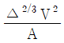
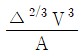
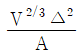
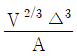
(정답률: 알수없음)
5. 다음 중 본전곡선(Bonjean curve)을 작성하기 위하여 반드시 알아야 되는 것은?
- 스테이션의 간격
- 각 홀수선에서의 횡단면적
- 각 홀수선에서의 수선면적
- 세로좌표(ordinate)의 길이
(정답률: 알수없음)
6. 심프슨(Simposon)의 제1법칙에서 심프슨 승수를 옳게 나열한 것은?
- 1, 4, 4, 2, 4 . . . 4, 4, 1
- 1, 2, 4, 4, 2, 4, . . . 2, 1
- 1, 2, 4, 2, 4 . . . 2, 1
- 1, 4, 2, 4 . . . 2, 4, 1
(정답률: 알수없음)
7. 휴즈에 의한 저항 분류에 따라 점성저항을 이루고 있는 저항은 평판의 마찰저항과 어떤 저항인가?
- 공기저항
- 조파저항
- 조와저항
- 형상저항
(정답률: 알수없음)
8. 스톡리스 앵커(stockless anchor)의 장점으로 틀린 것은?
- 닻의 취급이 간편하다.
- 플루크에 의한 파지력이 비교적 강하다.
- 투묘 후 스토크에 의한 닻줄이 꼬일 염려가 없다.
- 수심이 얕은 때에 플루크(fluke)에 의하여 선저가 손상을 입을 염려가 없다.
(정답률: 알수없음)
9. 시마진(Sea Margin)이란 무엇인가?
- 여분으로 싣는 연료
- 추진기관에 주는 여유마력
- 항해목적지까지의 잔여거리
- 선박운항에서 얻는 예상 외의 이윤
(정답률: 알수없음)
10. 선박의 운동에서 배의 길이 방향의 축을 중심으로 회전 왕복 운동을 하는 것은?
- Surging
- Yawing
- Pitching
- Rolling
(정답률: 알수없음)
11. 다음 중 선박의 계선·계류장치가 아닌 것은?
- 앵커(anchor)
- 볼라드(bollard)
- 페어리더(fairleader)
- 데릭 붐(derrick boom)
(정답률: 알수없음)
12. 선박의 길이 256m, 속력 13m/s 인 컨테이너선의 1/40 모형선의 대응속도는 약 몇 m/s 인가?
- 2.1
- 3.0
- 4.1
- 8.3
(정답률: 알수없음)
13. 밸러스트(Ballast)의 주된 사용 목적은?
- 공선시복원성조정
- 재화중량의 조정
- 추진성능 조정
- 선체저항의 조정
(정답률: 알수없음)
14. 선박의 주요치수만으로 옳게 나열한 것은?
- 길이(L), 폭(B), 깊이(D), 건현(f)
- 길이(L), 폭(B), 깊이(D), 흘수(d)
- 길이(L), 폭(B), 깊이(D), 트림(t)
- 길이(L), 폭(B), 깊이(D), 톤수(ton)
(정답률: 알수없음)
15. 선박의 흘수에 대하여 1cm 침하톤수가 20ton 이라면 이 흘수에 대한 수선면적은 약 몇 m2 인가? (단, 해수의 비중량은 1.025 ton/m3 이다.)
- 1922.2
- 1933.3
- 1951.2
- 1955.5
(정답률: 알수없음)
16. 앵커체인의 련(shackle)과 련(shackle)사이에 연결되는 부품의 종류가 아닌 것은?
- Joining shackle
- Kenter shackle
- Common link
- Enlarged link
(정답률: 알수없음)
17. 선박 길이방향의 횡단면적 분포상태를 나타내며 값이 작을수록 중앙부에 배수용적이 집중해 있음을 나타내고 1에 가까울수록 전후부에 고르게 분포해 있음을 나타내는 선형계수는?
- 방형계수
- 수직주형계수
- 주형계수
- 중앙횡단면계수
(정답률: 알수없음)
18. 선급에서 배의 길이를 표시하거나 선박계산 등에 사용되는 길이는?
- 수선장(LWL)
- 전장(LOA)
- 수선간장(LPP)
- 건현장(Lf)
(정답률: 알수없음)
19. 선수흘수 380cm, 선미흘수 345cm인 배가 중량물 이동으로 선수흘수는 360cm, 선미흘수는 450cm로 변화하였다면 새로운 흘수선에 대한 트림은?
- 90cm 선미트림
- 90cm 선수트림
- 20cm 선수트림
- 1⑤cm 선미트림
(정답률: 알수없음)
20. 선박이 진행하는 방향과 90°의 방향으로 입사하는 파도를 무엇이라 하는가?
- 횡파(Beam sea)
- 선수파(Head sea)
- 선수사파(Bow sea)
- 선미파(Following sea)
(정답률: 알수없음)
2과목: 조선유체역학 및 재료역학
21. 직경 40cm 의 관속에 0.628 m3/s의 유량으로 유체가 흐르고 있다면 이 유체의 평균속도는 약 몇 m/s 인가?
- 0.5
- 1.25
- 4
- 5
(정답률: 알수없음)
22. 물리 법칙이 F(a, V, v, L) = 0 같은 식으로 주어졌다면 무차원수의 함수로 표시할 때 무치원 군은 몇 개 인가? (단, a : 선가속도, V : 선속도, v : 동점계수, L : 길이이다.)
- 2
- 3
- 4
- 5
(정답률: 알수없음)
23. 관 속의 흐름에서 레이놀즈수가 1200인 경우 마찰계수의 값은 약 얼마인가?
- 0.016
- 0.031
- 0.043
- 0.⑤3
(정답률: 알수없음)
24. 물의 높이가 h 인 물탱크의 바닥에 구멍을 내었을 때 구멍을 통해 나오는 물의 속도는?
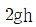
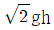
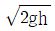
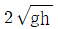
(정답률: 알수없음)
25. 상온에서 액체의 비중이 1.5 일 때 이 액체의 밀도는 약 몇 kgf·s2/m4 인가?
- 135
- 147
- 153
- 174
(정답률: 알수없음)
26. 배가 물 위에서 항주할 때 발생하는 파도에 의한 항력을 조사하기 위해 모형선 시험을 할 때 실선과 모형선과의 역학적 상사관계가 성립하기 위해 같아야 하는 것은?
- 실선과 모형선의 속도
- 실선과 모형선의 프루드수
- 실선과 모형선의 레일놀즈수
- 실선과 모형선의 프루드수와 레일놀즈수
(정답률: 알수없음)
27. 원관을 흐르는 유체의 층류와 난류유동에 대한 설명으로 틀린 것은?
- 층류전단응력이 난류전단응력보다 크다.
- 전단응력은 파이프의 중심으로부터 거리에 비례한다.
- 원관 윤동에서 레이놀즈수가 2100 이하이면 층류운동이다.
- 원관 윤동에서 레이놀즈수가 4100 이하이면 난류운동이다.
(정답률: 알수없음)
28. 그림과 같은 용기가 가속도 α로 직선운동할 때 액체표면의 경사각 θ는? (단, g는 중력가속도이다.)
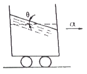
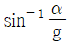
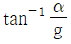
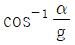
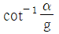
(정답률: 알수없음)
29. 다음 중 교란되지 않은 유체의 정압을 측정할 때 사용되는 장치는?
- 피에조미터(Piezometer)
- 벤츄리미터(Venturi meter)
- 다이나모미터(Dynamometer)
- 열선 아네모미터(hor-wire anemometer)
(정답률: 알수없음)
30. 수심이 1.2m인 수조의 바닥에 한변이 0.8m인 정사각형 덮개에 작용하는 수압에 의한 힘은 약 몇 kN 인가? (단, 물의 밀도는 1000 kg/m3 이다.)
- 5.0
- 7.5
- 10.5
- 15.0
(정답률: 알수없음)
31. 2축 응력상태에서 σx= 30 MPa, σy= -20 MPa 일 때 최대전단응력은 몇 MPa 인가?
- 5
- 15
- 25
- 35
(정답률: 알수없음)
32. 그림과 같은 단순보에서 반력 R1, R2는 각각 몇 N인가?
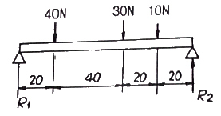
- R1 = 44N, R2= 36N
- R1 = 34N, R2= 46N
- R1 = 40N, R2= 40N
- R1 = 46N, R2= 34N
(정답률: 알수없음)
33. 후크의 법칙에 대한 설명 중 틀린 것은?
- 전단탄성계수와 전단변형률은 서로 반비례한다.
- 축방향 응력과 축방향 변형률은 서로 반비례한다.
- 축방향 응력과 세로탄성계수는 서로 비례한다.
- 전단응력과 전단탄성계수는 서로 비례한다.
(정답률: 알수없음)
34. 같은 인장하중을 받는 환봉에서 지름의 비가 1:2라고 하면 발생되는 응력의 비는?
- 1:2
- 2:1
- 1:4
- 4:1
(정답률: 알수없음)
35. 아래 그림과 같은 균일분포 하중 ω를 받는 외팔보의 최대굽힘모멘트는 몇 kN·m 인가?
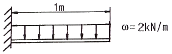
- 1
- 2
- 10
- 20
(정답률: 알수없음)
36. 바깥지름 10cm, 안지름 8cm의 속빈 원형 단면의 단면 2차모멘트(I)와 단면계수(Z)는 각각 cm4과 몇 cm3 인가?
- I = 58.0, Z = 116
- I = 116, Z = 68.1
- I = 290, Z = 58.0
- I = 290, Z = 68.1
(정답률: 알수없음)
37. 길이 1m의 연강봉이 100MPa 의 인장응력을 받고 있을 때 신장량은? (단, 연강봉의 탄성계수 E = 200 GPa 이다.)
- 0.025mm
- 0.⑤mm
- 0.025cm
- 0.⑤cm
(정답률: 알수없음)
38. 한 변의 길이가 4cm의 정사각형 단면을 가진 길이 1m인 외팔보의 자유단에 집중하중을 작용시켰더니 5mm의 처짐이 생겼다. 이 보에 발생하는 최대 굽힘 응력은 몇 MPa인가? (단, 탄성계수 E = 210 GPa 이다.)
- 33
- 43
- 53
- 63
(정답률: 알수없음)
39. 보의 탄성곡선의 곡률반경 ρ를 표시할 때 옳은 것은? (단, M : 굽힘모멘트, E : 탄성계수, I = 단면 2차모멘트)
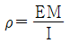
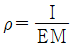
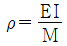
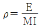
(정답률: 알수없음)
40. 그림과 같은 원형 단면과 정사각형 단면의 보에서 두 단면에 작용하는 전단력이 같을 때 최대 전단 응력의 비(τA/τB)는?
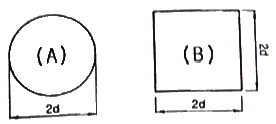
- 8/9
- 8/9π
- 16/9
- 32/9π
(정답률: 알수없음)
3과목: 선체구조학
41. 선루에 대한 설명으로 옳은 것은?
- 길이의 1/4 이상 걸쳐있는 상부구조물이다.
- 길이의 1/5 이상 걸쳐있는 상부구조물이다.
- 외판에서 선폭의 1/25 이내에 측벽을 가진 상부구조물이다.
- 외판에서 선폭의 1/20 이내에 측벽을 가진 상부구조물이다.
(정답률: 알수없음)
42. 갑판의 캠버(Camber)를 두는 목적으로 옳은 것은?
- 사람의 보행이 편하다.
- 갑판화물 적재에 편하다.
- 갑판보(Deck beam)의 시공이 간편하다.
- 갑판의 강도가 좋아지며 배수에 편리하다.
(정답률: 알수없음)
43. 특설늑골(web frame)에 대한 설명으로 옳은 것은?
- 특수한 재료로 만든 늑골이다.
- 단일한 부재로 만든 늑골이다.
- 특설보와 결합하여 선체의 횡강도를 증가시킨다.
- 특수한 구조로 종강력을 보강해 주기 위한 늑골이다.
(정답률: 알수없음)
44. 동일한 단면 2차모멘트를 갖는 선박이 일정한 종굽힘모멘트를 받고 있을 때의 설명으로 옳은 것은?
- 단면계수가 크면 종굽힘응력이 커진다.
- 중립축의 위치에서 굽힘응력이 최대가 된다.
- 단면의 면적중심이 하방으로 치우져 있으면 단며하부의 응력이 크게 된다.
- 중립축이 단면의 중앙에 있으면 중립축 상부 및 하부의 응력의 절대값은 같다.
(정답률: 알수없음)
45. 선체 종강도의 계산 순서로 옳은 것은?
- 부력곡선 → 중량곡선 → 전단력곡선 → 하중곡선 → 굽힘모멘트곡선
- 중량곡선 → 부력곡선 → 하중곡선 → 전단력곡선 → 굽힘모멘트곡선
- 하중곡선 → 중량곡선 → 부력곡선 → 전단력곡선 → 굽힘모멘트곡선
- 전단력곡선 → 중량곡선 → 부력곡선 → 하중곡선 → 굽힘모멘트곡선
(정답률: 알수없음)
46. 원유운반선에서 화물창의 길이가 길어짐에 따라 유체의 유동에 의한 압력(슬로싱)에 의해 손상이 일어나기 가장 쉬운 부재는?
- 선측외판
- 선저외판
- 이중저구조의 내저판
- 격벽 상부 및 인접 상갑판
(정답률: 알수없음)
47. 선박의 격벽 중 별도의 보강재를 붙이지 않고 단면 형상이 그림과 같은 격벽의 명칭은?
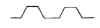
- 파형격벽
- 수밀격벽
- 요철격벽
- 비수밀격벽
(정답률: 알수없음)
48. 선체 내부에 격벽을 설치하는 목적이 아닌 것은?
- 화물을 성질별로 분류하여 적재한다.
- 노천시의 파도를 막아 누수를 방지한다.
- 화재 발생시 방화벽의 기능을 하도록 한다.
- 수밀 구획을 만들어 침수 구역을 한정시킨다.
(정답률: 알수없음)
49. 다음 중 비틀림 강도에 직접 기여치 않는 부재는?
- 늑골
- 갑판
- 거더(girder)
- 외판
(정답률: 알수없음)
50. 다음 중 종강력재(longitudinal strength member)가 아닌 것은?
- 갑판(deck)
- 용골(Keel)
- 만곡부외판(Bilge strake)
- 횡격벽(transverse bulkhead)
(정답률: 알수없음)
51. 선체에 종식 늑골구조를 사용할 때 횡식 늑골구조와 비교한 장점이 아닌 것은?
- 공작이 간단하다.
- 종강력이 유리하다.
- 선체중량이 작아진다.
- 액체 화물적재에 적합하다.
(정답률: 알수없음)
52. 그림과 같은 횡단면도의 화물창에 적재하는 화물로서 적절하지 않은 것은?
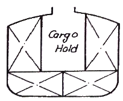
- 곡물화물
- 광석화물
- 석재화물
- 석탄화물
(정답률: 알수없음)
53. 선체 격벽 중 반드시 수밀이어야 하는 것은?
- 기관실 후단 격벽
- 중심선 격벽
- 스크린 격벽
- 석탄고 격벽
(정답률: 알수없음)
54. 창구연재(hatch coaming)를 붙이는 목적은?
- 선창의 통풍을 위하여
- 갑판을 보강하기 위하여
- 공작을 용이하게 하기 위하여
- 하역작업을 용이하게 하기 위하여
(정답률: 알수없음)
55. 경감홀처럼 부재에 구멍 있는 경우 구멍주위에 응력집중이 발생하는데 인장하중을 받은 경우 응력집중을 완화시키는 방법이 아닌 것은?
- 구멍의 모양을 둥글게 한다.
- 구멍주위에 보강환을 붙인다.
- 구멍을 부재의 중립축 근처에 둔다.
- 부재두께를 증가시키며 구멍크기를 감소시킨다.
(정답률: 알수없음)
56. 다음 중 선미와 선수구조에 모두 사용되는 부재는?
- 심늑판(deep floor)
- 힐피스(heel piece)
- 브레스트 훅(breast hook)
- 패션 플레이트(fashion plate)
(정답률: 알수없음)
57. 선체에 작용하는 전단응력에 대한 설명으로 틀린 것은?
- 전단응력이 큰 선박은 굽힘응력도 크다.
- 최대전단응력은 선박의 깊이에 비례한다.
- 최대전단응력은 외판의 두께에 반비례한다.
- 선수미 각각에서부터 선체길이의 약 1/4의 위치에서 최대값을 가진다.
(정답률: 알수없음)
58. 상갑판이 현측후판(Shear strake)과 접하는 판은?
- Deck beam
- Deck stringer
- Gunnel-L형재
- Side deck
(정답률: 알수없음)
59. 연판(margin plate)을 붙이는 곳은?
- 갑판과 외판의 연결부위
- 이중저와 필러의 연결부위
- 선저만곡부와 이중저 연결부위
- 용골과 중심선거더의 연결부위
(정답률: 알수없음)
60. 다음 중 외판 명칭의 설명이 잘못된 것은?
- sheer strake : 강력갑판하의 현측 최상부 외판
- bilge strake : 선저 외판중 만곡부에 있는 외판
- side plate : propeller post의 boss를 싸고 있는 외판
- bottom plate : 평판 용골에 연결되는 외판으로 만곡부 상단까지의 외판
(정답률: 알수없음)
4과목: 선박건조학 및 선박동력장치
61. 해안선이 1변이며 가장 적은 면적으로 배치할 경우 일반적으로 적합한 기본 공장 배치 형태는?
- I자형
- T자형
- L자형
- U자형
(정답률: 알수없음)
62. 선체 내업(가공)공사 공정을 순서대로 옳게 나열한 것은?
- 절단 → 벤딩 → 마킹 → 변형 제거
- 절단 → 변형 제거 → 마킹 → 벤딩
- 변형 제거 → 마킹 → 절단 → 벤딩
- 마킹 → 변형 제거 → 벤딩 → 절단
(정답률: 알수없음)
63. 선행의장을 옳게 설명한 것은?
- 선수부분에서 이루어지는 의장작업이다.
- 블록 조립과정에서 이루어지는 의장작업이다.
- 전기, 기관, 실내의장작업을 통칭하는 의장작업이다.
- 탑재공정 이전에 지상에서 이루어지는 의장작업이다.
(정답률: 알수없음)
64. 강재의 표면 전처리 방법으로 아연도금 전처리나 소품재, 형강, 비철금속의 표면처리에 사용되는 화학적 방법은?
- 산세척
- 숏블라스트
- 샌드블라스트
- 가스 녹털기
(정답률: 알수없음)
65. 블록 건조 방식의 장점이 아닌 것은?
- 고소작업의 위험이 감소된다.
- 독 또는 선대작업기간을 단축할 수 있다.
- 공정과 공작기술의 관리 감독이 용이하다.
- 선체건조시 필요한 강재량을 줄일 수 있다.
(정답률: 알수없음)
66. 경사선대에서 선박을 진수할 경우 진수계산 항목이 아닌 것은?
- 진수 후의 흘수
- 포핏에 작용하는 압력
- 선미부양까지의 활주거리
- 자유부양 후의 선박 속도
(정답률: 알수없음)
67. 절단선을 판에 마킹한 후 판을 절단하게 되면 절단선이 없어지므로 절단의 정확성을 판단할 수 없다. 이 때 일정 간격을 두고 절단선과 평행하게 마킹하는 선은?
- 차월선
- 기준선
- 맞춤선
- 프레임선
(정답률: 알수없음)
68. 선박 건조시 건조독의 활용을 높이기 위해 다른 선박의 선수 또는 선미 블록을 건조하여 진수시 부상시켜 이동하여 건조하는 방식은?
- 층식건조방식
- 세미텐덤건조방식
- 다점식건조방식
- 피라밋식건조방식
(정답률: 알수없음)
69. 선체조립 작업시 용접에 의한 변형을 교정하는 방법이 아닌 것은?
- 선상가열법
- 가우징 작업에 의한 방법
- 가열 후 해머링하는 방법
- 가열 후 압력을 가하고 수냉하는 법
(정답률: 알수없음)
70. 가스절단시 절단 변형의 방지 대책으로 틀린 것은?
- 피절단재를 고정한다.
- 수냉에 의하여 열을 제거한다.
- 열의 영향을 적게 받도록 지그재그로 절단한다.
- 절단부와 대칭인 판끝을 미리 가열하여 열의 평형을 유지한다.
(정답률: 알수없음)
71. 다음 중 상선에 가장 적합한 프로펠러는?
- 제트 프로펠러
- 패들 프로펠러
- 스크류 프로펠러
- 보이드-슈나이더 프로펠러
(정답률: 알수없음)
72. 다음 중 디젤기관의 연소실을 형성하는 부품이 아닌 것은?
- 피스톤 로드
- 실린더 라이너
- 피스톤 헤드
- 실린더 헤드
(정답률: 알수없음)
73. 선체를 관통하는 곳에 설치되는 유윤활식 선미관의 역할은?
- 진동방지와 전기절연
- 해수 공급량을 적당하게 유지
- 선미관의 패킹 및 선체강도 보강
- 해수 침입 방지와 기름누설 방지
(정답률: 알수없음)
74. 중고속 디젤기관을 추진기관으로 사용하는 선박에서 감속 역전장치를 두는 이유가 아닌 것은?
- 클러치를 떼고 추진기관을 하역펌프 등의 원동기로 사용하기 위하여
- 추진축의 직경을 가늘게 할 수 있어 제작비를 낮추고 중량을 감소시키기 위하여
- 프로펠러의 회전속도를 낮추고 직경을 크게 하여 프로펠러의 효율을 높이기 위하여
- 기관이 자기역전식이 아닌 경우 프로펠러의 회전방향을 바꾸기 위하여
(정답률: 알수없음)
75. 프로펠러에 관한 용어를 설명한 것으로 틀린 것은?
- 투영면적비란 투영면적을 전원면적으로 나눈 값이다.
- 전개면적이란 전개면적을 전원면적으로 나눈 값이다.
- 전개면적에는 보수나 날개와 날개사이의 틈 부분은 포함되지 않는다.
- 피치비란 프로펠러 직경을 피치로 나눈 값이다.
(정답률: 알수없음)
76. 가스터빈이 다른 내연기관에 비교하여 갖는 장점이 아닌 것은?
- 시동시 소리가 작고 시동이 편하다.
- 기관이 작고 구조가 간단하여 가볍다.
- 유지비가 싸고 윤활유의 소비가 적다.
- 중질증류유(heavy distilled fuel)를 사용할 수 있다.
(정답률: 알수없음)
77. 디젤기관의 점화 방식은?
- 전기점화
- 불꽃에 의한 점화
- 공기압축에 의한 점화
- 실린더와 피스톤의 마찰열에 의한 점화
(정답률: 알수없음)
78. 감속장치의 감속비는 무엇의 비인가?
- 휠 잇수와 피니언의 잇수비
- 휠 모듈과 피니언의 모듈비
- 휠 피치원과 피니어의 잇수비
- 휠 피치원과 피니언의 모듈비
(정답률: 알수없음)
79. 2행정 디젤기관과 4행정 디젤가괸의 이론적 출력 차이를 옳게 설명한 것은? (단, 모든 조건은 동일하다.)
- 차이가 없다.
- 2행정 기관이 4행정 기관에 비하여 출력이 2배 크다.
- 4행정 기관이 2행정 기관에 비하여 출력이 2배 크다.
- 2행정 기관이 4행정 기관에 비하여 출력이 4배 크다.
(정답률: 알수없음)
80. 추력 베어링의 주된 역할은?
- 축의 중심유지
- 축의 진동을 방지
- 클러치의 진동방지
- 프로펠러의 추력을 선체에 전달
(정답률: 알수없음)